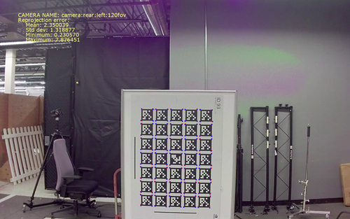
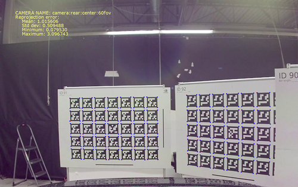

The NVIDIA® DriveWorks Intrinsics Validator tool validates the intrinsic parameters for a calibrated camera.
It computes the reprojection error (mean, std, min, max) for AprilTag corners, and prints a validated PNG file as output.
This tool is available on the x86 Host System and NVIDIA DRIVE™ OS Linux.
This tool creates output files that are placed into the current working directory by default. Please ensure the following for your convenience:
To print the desired AprilTag target, measure the horizontal and vertical bars, and ensure they measure the same length.
The targets to print can be found in /data/tools/calibration.
Run the tool by executing:
./calibration-intrinsics-validator --image=[input image]
--targetsDB=[JSON file]
--rig=[rig file]
--camera=[camera name]
--output=[output image]
--stats-json=[output JSON file]
--image=[path to image file]
Description: The image used to compute the reprojection error. It must contain at least one visible AprilTag target.
--targetsDB=[path to JSON file]
Description: The JSON file containing all the possible targets that can be used.
Default value: /data/tools/calibration/targets.json
--rig=[path to rig file]
Description: The rig file containing the camera intrinsics. It may be generated with the calibration tool.
Default value: /tools/intrinsics_validator/rig.json
--camera=[camera name]
Description: The name of the camera to validate as specified in the rig file `name` field.
Default value: B2_XR_60
--output=[path to output PNG file]
Description: The path where the output validation image in PNG format is stored.
If this parameter is empty, it will not render or store any image.
Default value: output.png
--stats-json=[path to output JSON file]
Description: The path where the JSON file with the output statistics will be stored.
If this parameter is empty, it will not save any file.
The tool outputs an image with the detected corners (blue dots), and the reprojected corner points (red dots).

